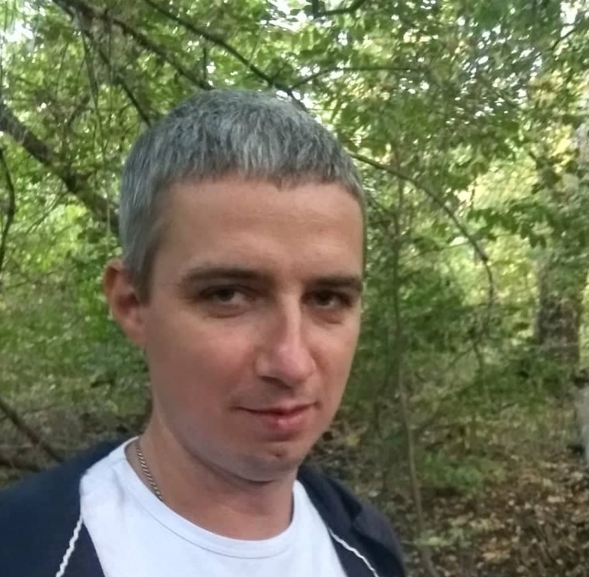

Резюме Технолога ЧПУ
Романенко Кирилл

Желаемая должность: Технолог ЧПУ
Желаемая зарплата: 20 тыс. грн.
Дата рождения: 14.09.1987
Проживание: г. Чернигов
Контактная информация:
тел. 0631515820
Электронная почта: kirill_777@ukr.net
Facebook
Ключевые навыки:
- Подбор инструмента для обработки детали;
- Написание техпроцена и карты наладки;
- Создание управляющих программ для станка с ЧПУ;
Опыт работы:
2008-2010 Оператор ЧПУ на ЗАО ЧКЗ
Сфера деятельности компании: разработка и создание штампов горячего прессования.
Обязаности:
- Наладка станка с ЧПУ
- Контроль производства детали;
- Контроль качества изготовляемой детали;
- Корректировка техпроцеса;
2010-2019 Технолог ЧПУ на ТОВ Промсервис
Сфера деятельности компании: разработка и изготовление пресформ и штампов.
Обязаности:
- Разработка техпроцеса и карты наладки станка с ЧПУ;
- Написание управляющих программ для станка с ЧПУ;
- Контроль качества изготовляемой детали;
- Корректировка техпроцеса;
Образование:
ЧНПУ им. Т.Г. Шевченка, кафедра Физики и Информатики.